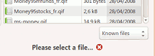
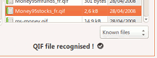
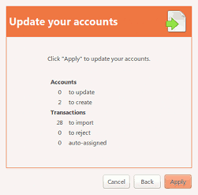

HomeBank is able to import files downloaded from your bank institution, and also files exported from some various other personal accounting software, like Money, Quicken, GnuCash, via the supported file format
From the main window:
In this page, you will select a single file to import. As default, HomeBank will filter the file on every known formats, you can filter on a precise format if you want.
When you have not selected a file, or the file is not supported:

When the file is supported:

In this page, you will see a summary of the file currently in the import process with a count of accounts, transactions, payees and categories.
When you import a QIF/CSV file, you will be able to change the default date order here if the load failed on this. he default date order can be configured into the preferences dialog.
In this section, you control the accounts to be imported.
Depending the file format, HomeBank will try to match the account by its number or its name.
For QIF: the match will be done by the account name
For OFX: by account number, HomeBank try to find the OFX number as a substring of an account number.
For CSV: a default account will be created, change this manually if required.
However, for some QIF files, or any CSV files, there is no information that will permit to identify the account to import, so you will to manage this manually.
In this section, you control the transactions to be imported.
HomeBank will detect if a transaction you currently want to import already exists, and if so will not check the import box for that transaction and you also have a warning icon.
If some transaction are suspected to have duplicates, you will be able to view the duplicates in the "Detail of duplicate transaction" for each transaction you select.
Once you unfold this section, you can also change some detection parameters and refresh.
The detection is done in the following order: account, amount, and date according to the defined tolerance (default is 0 days).

This last step will show the synthesis of what is to be imported.
The number of accounts to update / create.
The number of transaction to be imported, rejected and the one for which automatic assignment was done for payee and/or category.